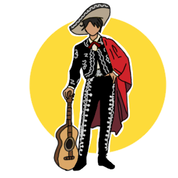
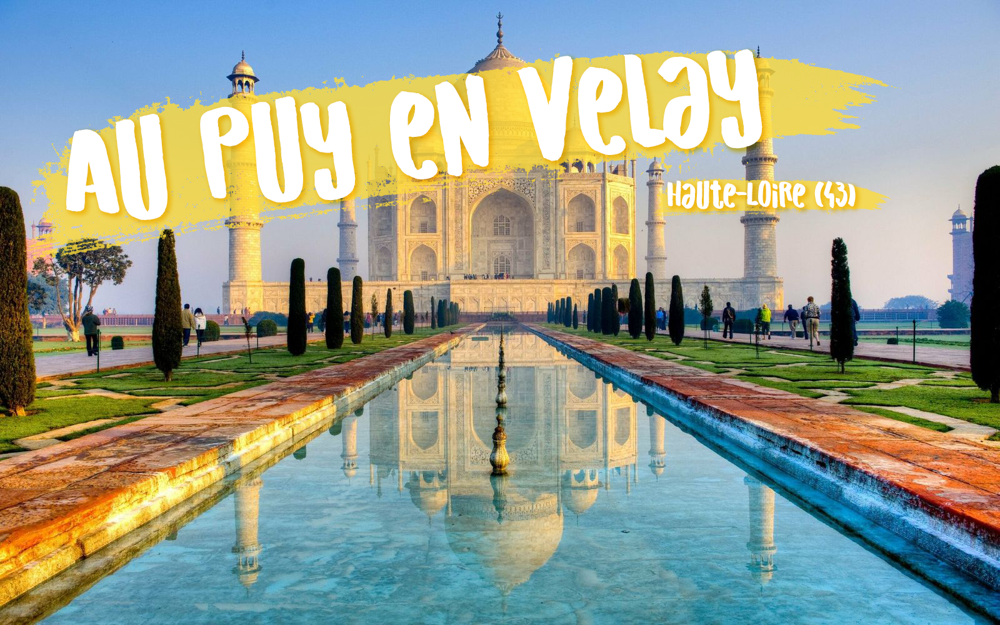
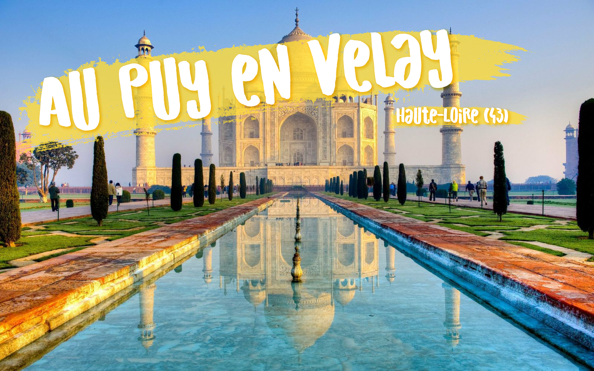

Venez découvrir le nouvel évènement du Puy-En-Velay : Le Puy du Monde du vendredi 21 avril au
dimache 23 !
Cuisine, Costumes, Musiques, Danses, Défilé, Activités et bien d'autres surprises vous attendent dans toute la
ville sur le thème du Japon, Mexique, Inde et Egypte.
Parcourez la ville pour découvrir les quatres pôles des différents pays et découvrir leur culture.
Venez également découvrir un grand concert d'ouverture avec des artistes venant des pays correspondant.
Un grand défilé cloturera cet évènement avec de la danse, de la musique, des costumes et de nombreux artistes.
Programme 2023
Vendredi 21 avril
A partir de 20h-01h environ: Concert d'ouverture avec différents artistes venant des pays correspondant.
Au programme : de la danse, de la musique, des spectacles et beaucoup d'amusement !
Samedi 22 avril
9h-12h30 : Apprentissaage des spécialités culinaires
des pays sur leurs stands (possibilité de déguster et de partir avec ceux que vous aurez fait)
12h30-14h : Mise en place de restaurants aménagés selon le thème du pays correspondant.
Dégustation de repas traditionnels de chaque pays.
14h-19h : Activité et concours propre à chaque stand de chaque pays. Vous pourrez également
acheter différentes choses typiques de chaque pays comme des costumes, des bibelots et bien d'autres surprises.
19h-01h : Bar, danse, musique ! Une ambiance pour faire la fête et s'amuser !
Dimanche 23 avril
Chaque pays proposera différentes activités tout au long de la journée.
Vous pourrez découvrir pleinement chaque culture, de la cuisine,
de la musique, de la danse, des concours, des activités originales
que vous n'aurez pas souvent l'occasion de faire !
15h30-16h30 : Remise de prix de la vitrine la mieux décorée pour l'occasion !
Vous pourrez voter tout au long de l'évènement pour la vitrine que vous trouvez
la plus jolie.
17h : Grand défilé dans toute la ville, qui cloturera l'évènement. Chaque pays
défilera avec leurs tenues typiques, de la danse, de la musique et quelques spectacles.
Les pays seront réunis pour la fin de cet évènement riche en culture !
Concert
Le Puy du Monde vous propose un grand concert d'ouverture invitant pleins d'artistes du monde entier à vous faire un spectacle grandiose !
Ses artistes danseront, chanteront, feront différents spectacles pour vous émerveiller.
Venez vous amuser et faire la fête lors de ce concert d'ouverture !
Pensez à réserver à l'avance pour garantir une place au concert.
Japon
Le Japon est un pays insulaire situé dans l'océan Pacifique. Lors de l’évènement Le Puy Du Monde, vous aurez l’occasion de découvrir les spécialités culinaires du Japon mais aussi le kimono qui est le vêtement traditionnel japonais par excellence et ne passe pas de mode.
Il y aura également une présentation d’armes typique du Japon
Vous pourrez vous exercer au lancer de kunai ou de shuriken ...

Mexique
Situé entre les États-Unis et l'Amérique centrale voici le Mexique ! En ce qui concerne les plats typiques mexicains, on peut évidemment citer le Taco qui est
une tortilla de maïs garnie.
Les vêtements mexicains ont tous en commun l’appréciation des couleurs vives et du beau travail.
Certains objets et œuvres d’arts typiques mexicains seront présentés sur les stands.
Des jeux seront organisés ...
Inde
Immense pays du sud de l'Asie
La cuisine indienne recouvre une grande variété de cuisines régionales d'Inde. Vous pourrez aussi, venir découvrir les vêtements typiques de l'Inde, mais aussi les porter pour vous immerger pleinement dans la culture du pays.
Vous pourrez retrouvez des objets typiques de ce pays comme le Charpoy.
Des danseurs seront là pour vous donner l'occasion de danser et de vous amuser de la même manière que les indiens/indiennes ...
Egypte
L'Égypte est un pont entre l'Afrique du Nord-Est et le Moyen-Orient. Venez découvrir de nombreux plats égyptiens qui vous permettront de passer un bon
moment en découvrant cette cuisine.
Venez découvrir de nombreux plats égyptiens qui vous permettront de passer un bon moment en découvrant cette cuisine.
Les tenues traditionnelles seront au Puy du Monde avec des bijoux, des jupons et bien d'autres choses à découvrir
Tellement d'objets sont à découvrir comme le parfum, le papyrus et d'autres surprises seront sur les stands
Les petits comme les grands, venez vous maquiller comme Cléopâtre et construire des pyramides ...
Lieu
Pour Le Puy Du Monde, nous allons diviser le Puy-en-Velay en 4 pays. Les 4 pays que nous avons choisis sont : l’Inde, le Japon, le Mexique et l’Egypte.
Chacun des pays se verra attribuer une place précise dans la ville, et vous pourrez y découvrir de tout autres cultures. Vous pourrez découvrir la cuisine
de ces pays, leur tenue traditionnelle, ou encore par exemple des objets typiques et des œuvres d’art, grâce à des activités et à des concours que nous avons sélectionnés.
Durant l’événement, un concours sera organisé et destiné au commerçant du Puy-en-Velay. Leur concours sera celui de la vitrine la mieux décoré, et le gagnant se verra
remettre prix lors de la cérémonie de dimanche qui récompensera également les meilleurs participants sur les concours organisés sur chaque stand.
Le Japon se trouvera au Jardin Henri Vinay. Le parc sera décoré aux couleurs du Japon pour l’occasion et vous pourrez vous amuser au lancer de kunai ou essayer un combat
de sumo entre autres.
Le Mexique tiendra place au marché couvert, qui sera évidemment décoré aux couleurs mexicaines. Vous allez pouvoir goûter des plats épicés et nous testerons votre résistance
aux piments, mais également tester d’autres activités sur le thème du Mexique que vous allez adorer.
L’Inde sera représentée à la place de la mairie. Leurs couleurs et leurs coutumes égayeront la place. Nous vous inviterons à essayer de reproduire leurs danses traditionnelles
et leurs plats les plus populaires. Bonne chance à vous.
L’Egypte est à découvrir à la place du Breuil. Dans ce stand, vous pourrez découvrir les plats typiques égyptiens, ou encore vous maquiller à la manière de Cléopâtre,
et même essayer de construire une pyramide. Il y a encore plein de choses à découvrir de l’Egypte.
Pour plus d’informations, n’hésitez pas à regarder les pages du site dédié à chaque pays.

 
